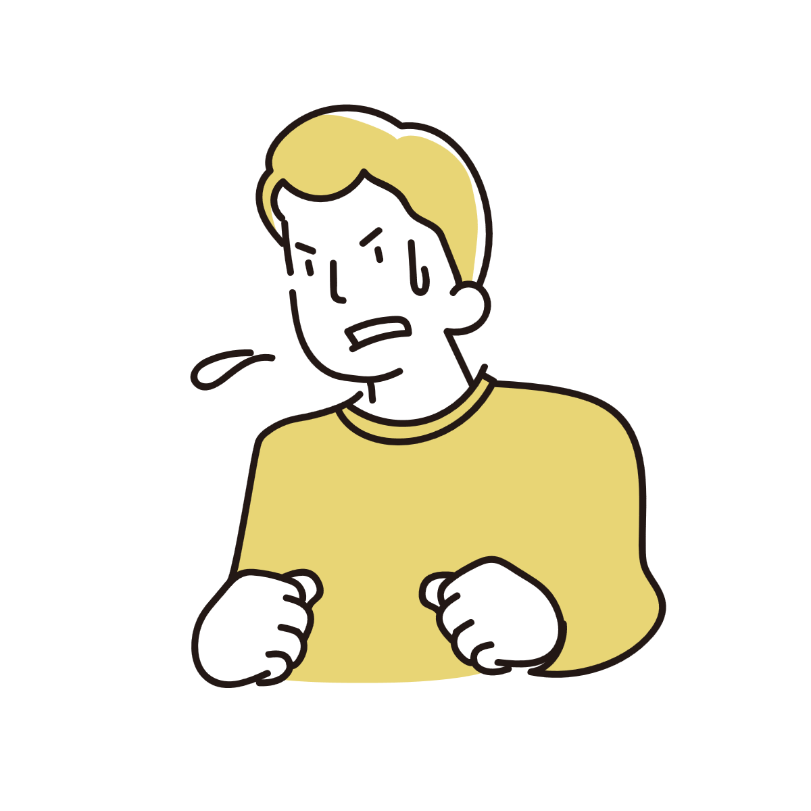
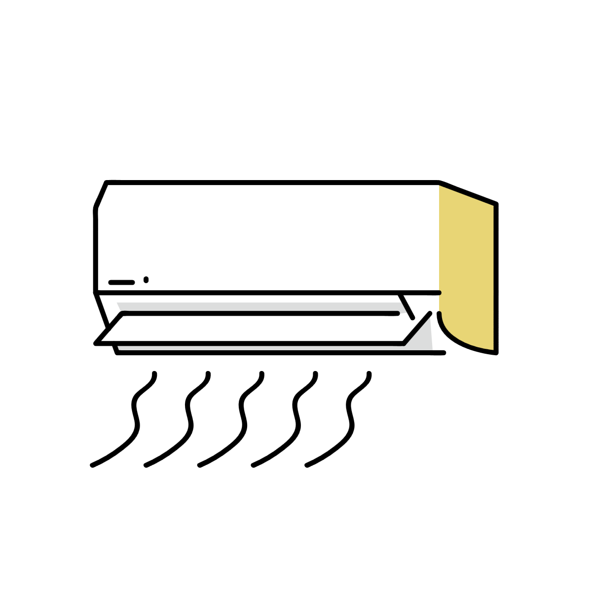
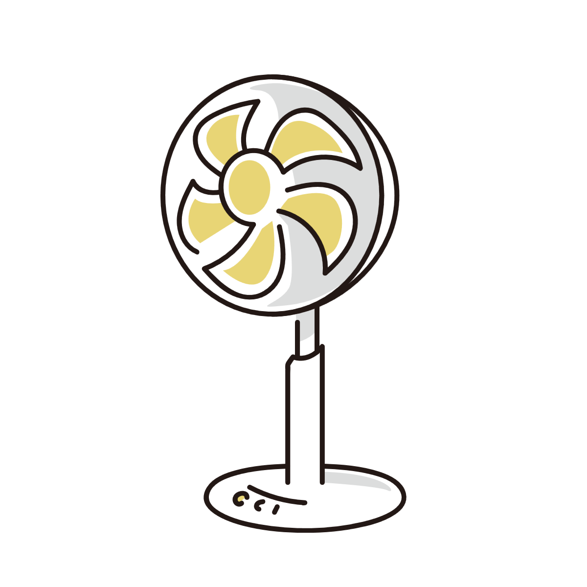

暑い屋外から屋内に入ったとき急に汗が出るのはなぜ？
暑い屋外から冷房の効いた屋内へ入った瞬間、「なぜか急に汗が噴き出した」と感じることがあります。 感覚的には涼しくなったのだから汗は止まりそうに思えますが、実際の体は少し遅れて反応しています。 そこには、体温調整や汗のタイムラグ、風や湿度など複数の要素が関係しています。

体は「外気温」ではなく「内部の熱」を見ている
汗は体温を下げるための仕組みですが、単純に「今の気温」だけを見て出ているわけではありません。
重要なのは、体の内部にどれだけ熱がたまっているかです。
暑い屋外を歩いていると、皮膚だけでなく筋肉や血液、内臓周辺まで少しずつ熱を持っていきます。
そのため屋内へ入った瞬間でも、体の内部にはまだ熱が残っています。
すると脳は、「まだ熱を逃がす必要がある」と判断し、しばらく発汗を続けることがあります。
汗は少し遅れて表面へ出てくる
汗は「暑い」と感じた瞬間に完全同期で出ているわけではありません。
汗腺が刺激され、汗が作られ、皮膚表面へ出てくるまでには少し時間差があります。
そのため、屋外でかいていた汗が、屋内へ入ってから表面へ出てくることがあります。
結果として、「屋内に入った瞬間に急に汗が増えた」ように感じることがあります。
冷房の中でも体はすぐには冷え切らない
屋内へ入ると、皮膚は比較的早く冷え始めます。
しかし体の内部にたまった熱は、すぐには消えません。
特に長時間歩いたあとや階段を上ったあとなどは、筋肉自体がまだ熱を作り続けています。
すると冷房の中でも、体はまだ「冷却モード」を続けることがあります。
汗が止まるまで少し時間がかかることがあるのは、このためです。

屋外では「風」が汗を消していたこともある
屋外は気温が高くても、風があることで汗が蒸発しやすくなっている場合があります。
汗は蒸発するときに熱を奪うため、風があると体は効率よく冷やされます。
また、汗そのものも乾きやすくなるため、実際には汗をかいていても「そこまで汗だく」と感じにくいことがあります。
一方で屋内へ入ると、空気は涼しくても風が弱いことがあります。
すると皮膚表面の汗が残りやすくなり、急に肌のベタつきや汗の感覚を意識しやすくなります。
つまり、「屋内で急に汗が増えた」というより、外では風によって目立たなかった汗を、屋内で強く感じるようになった場合もあるのです。

環境が変わると汗を意識しやすくなる
暑い屋外では、汗をかいていても意外と気にならないことがあります。
しかし静かな屋内へ入ると、肌の感覚や衣類の張り付き、顔を流れる汗などを急に意識しやすくなります。
さらに冷房の風が汗に当たることで、皮膚感覚が強調されることもあります。
そのため実際には汗量が急増していなくても、「急に汗が噴き出した」と感じやすくなります。
これは体温調整が正常に働いている反応でもある
この現象は、多くの場合は体の自然な体温調整の一部です。
体は急激にオン・オフを切り替えているわけではなく、少し時間差を持ちながら熱を調整しています。
そのため、「涼しくなったのに汗が出る」という現象も、ある意味では体がまだ熱を逃がそうとしている途中の状態と考えることができます。
特に夏場は、外気温や湿度、風、衣類、運動量など複数の要素が重なるため、汗の感覚も環境によって大きく変化しやすいのです。
参考情報と注意点
発汗量や暑さの感じ方には個人差があります。急激な変化や日常生活へ支障が出る場合は、医療機関への相談も検討してください。
関連アイテム
 | 価格:2553円〜 |